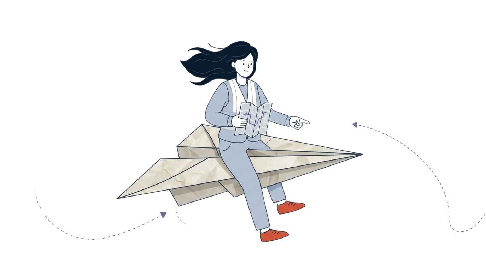

Encuentra una ruta segura
Elige cómo te mueves, de dónde sales y a dónde vas. SIGRE calcula la ruta por las calles de Montería y la compara con una ruta que evita las zonas de riesgo.
Carro y moto usan las mismas vías y respetan el sentido de las calles. El tiempo es un estimado con los límites de velocidad de OpenStreetMap, sin contar el tráfico.

Mapa de rutas
Las zonas son aproximaciones académicas basadas en el listado de barrios en riesgo de la Alcaldía; no son cartografía oficial. En una emergencia sigue las indicaciones de las autoridades y marca el 123.
Métricas de evacuación
Mis rutas guardadas
Cargando tus rutas...